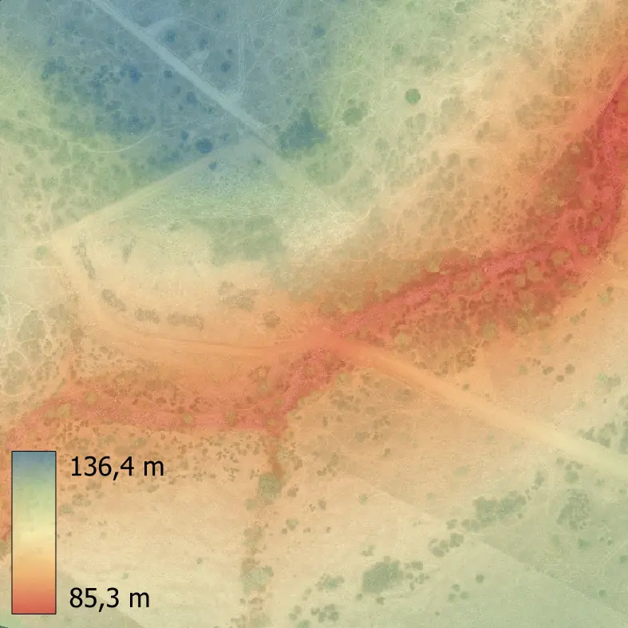
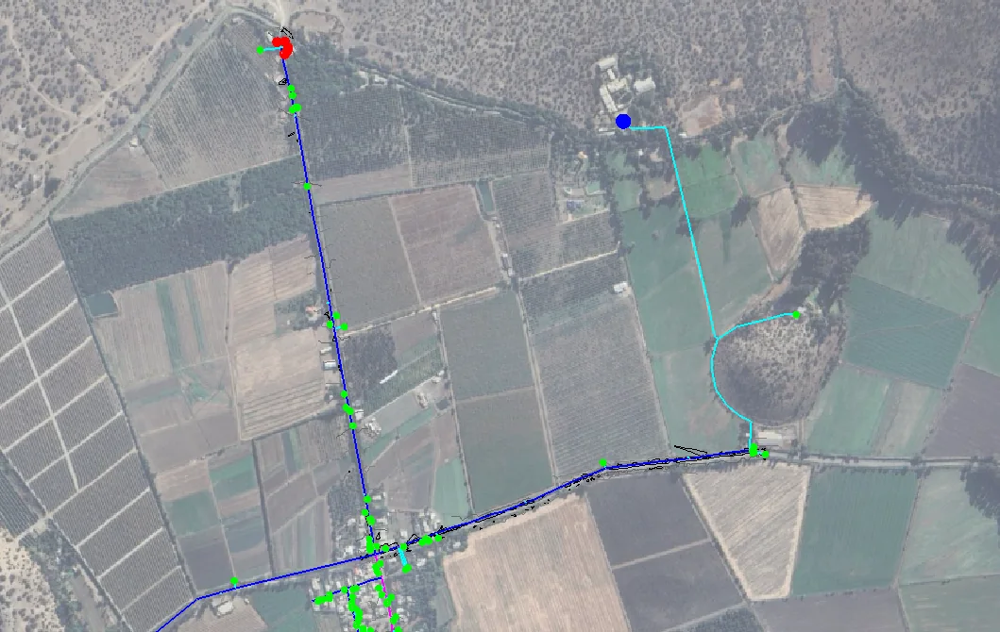

Levantamiento de terreno e ingeniería hidráulica
Hacemos topografía con dron, ingeniería hidráulica y proyectos sanitarios de agua potable y alcantarillado para la SEREMI de Salud. El mismo levantamiento sirve de base para el cálculo, así que no hay que coordinar a dos oficinas.
Oficina en Santiago. Terreno entre Coquimbo y La Araucanía.

Servicios
Topografía con dron
Nube de puntos y modelo de terreno
Para cubicar movimientos de tierra, diseñar y controlar avance de obra.
Curvas de nivel
Cada 0,25, 0,5 o 1 m, en DWG listo para Civil 3D.
Rectificación de deslindes
Dónde están de verdad los límites del predio, con coordenadas por vértice.
Mapas y ortomosaicos
Imagen aérea a escala, de 2 a 5 cm por píxel, sobre la que se puede medir.
Ingeniería hidráulica
Modelación de redes
Presiones, velocidades y diámetros verificados en EPANET.
Bombas e impulsiones
Punto de operación, golpe de ariete y consumo de energía.
Estudios de inundación
Hasta dónde llega una crecida y a qué cota conviene construir.
Drenaje pluvial
Colectores y obras de retención o infiltración para urbanizaciones.
Proyecto sanitario
Agua potable particular
Pozo, noria o vertiente, con el proyecto que pide la SEREMI de Salud.
Alcantarillado particular
Fosa séptica y drenes dimensionados con prueba de infiltración.
Agua potable sin fuente propia
Estanque abastecido por camión aljibe.
Autorización de funcionamiento
La resolución final, con la obra construida.
Trabajos realizados



Topografía e hidráulica en la misma oficina
Casi todos los proyectos de agua dependen de una buena topografía. La presión en una red, la pendiente de un colector o el límite de una zona inundable se deciden por diferencias de centímetros.
Cuando el levantamiento lo hacemos nosotros, el modelo hidráulico parte de cotas medidas en terreno y no de cartografía antigua. Y hablas con una sola contraparte de principio a fin.
Dónde trabajamos
Tenemos oficina en Santiago y hacemos terreno entre la Región de Coquimbo y La Araucanía: La Serena y los valles de Elqui, Limarí y Choapa; Valparaíso, Viña del Mar y el litoral; Rancagua, San Fernando y Santa Cruz; Curicó, Talca y Linares; Temuco, Angol, Villarrica y Pucón. Fuera de Santiago el terreno se hace en una sola salida, y el traslado va como un ítem aparte en la propuesta.
¿Tu terreno está en otra zona? Escríbenos y lo vemos.
Preguntas frecuentes
¿Cuánto cuesta un levantamiento con dron?
¿Qué precisión tiene un levantamiento fotogramétrico?
¿El levantamiento con dron reemplaza a un topógrafo?
¿Entregan archivos editables?
Cuéntanos de tu proyecto
Te respondemos en menos de 24 horas hábiles con alcance, plazo y valor.